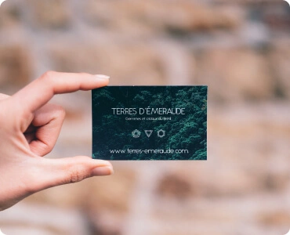

Icons
Іконки - невеликі прості зображення, які підсилюють ефект тексту, або самостійно несуть певну інформацію. У більшості випадків це векторні зображення. (SVG). Іконки можуть інтегруватись як тегом IMG так і через CSS (background та інші)
Content images
Контентні зображення - зображення, які і є контентом сайту. У більшості випадків це растрові зображення (фотографії). (JPG/PNG -> WEBP). Усі контентні зображення виводяться тегом IMG

Design images
Елементи дизайну - веркторні, або растрові зображення (можливо з прозорістю) які є частиною дизайну сайту. Можуть бути як векторні так і растрові (SVG, JPG/PNG -> WEBP). Елементи дизайну, частіше всього, інтегруються через CSS (background та інші)